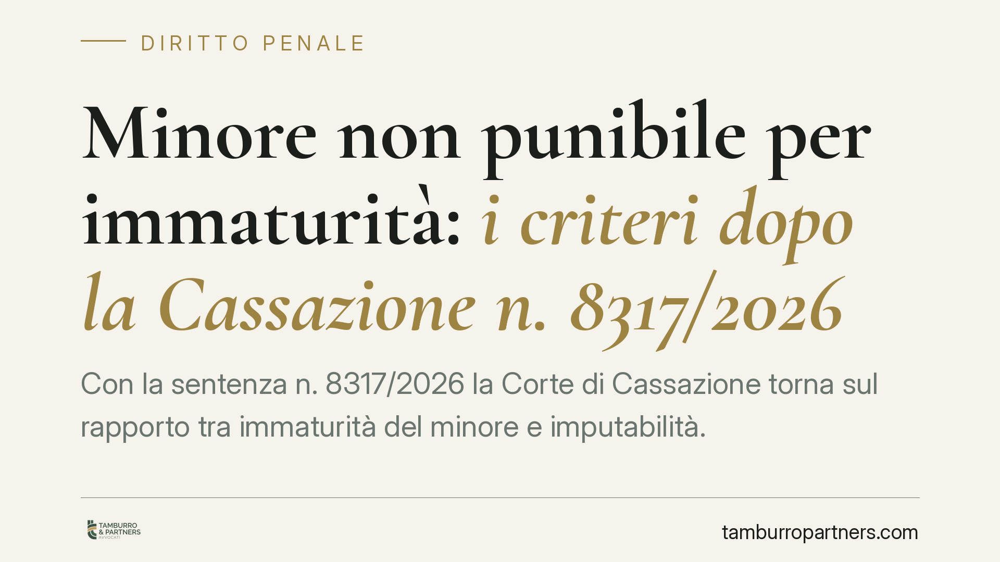

Minore non punibile per immaturità: i criteri dopo la Cassazione n. 8317/2026
Con la sentenza n. 8317/2026 la Corte di Cassazione torna sul rapporto tra immaturità del minore e imputabilità. Due i punti fermi: il vizio parziale di mente non prova, da solo, l'incapacità del minore, e l'età anagrafica non basta a stabilirne la maturità. Serve una verifica concreta, individuale e rigorosa della personalità.

Il principio affermato dalla Cassazione
La Corte di Cassazione, con la sentenza n. 8317/2026, ha precisato i confini della non punibilità del minore per immaturità. Il giudice non può dedurre automaticamente l'incapacità di intendere e di volere da un vizio parziale di mente, né può affidarsi al solo dato dell'età.
La valutazione deve essere autonoma e complessiva: riguarda la maturità reale del ragazzo al momento del fatto, non categorie presunte.
Inquadramento normativo
Il quadro si regge su tre norme del codice penale.
L'art. 97 c.p. fissa una presunzione assoluta: chi ha meno di quattordici anni non è mai imputabile. Sotto quella soglia non c'è spazio per accertamenti.
L'art. 98 c.p. disciplina la fascia tra i quattordici e i diciotto anni. Qui l'imputabilità non è presunta: va accertata in concreto la capacità di intendere e di volere. Il minore risponde del reato solo se, al momento del fatto, era "maturo", cioè capace di comprendere il disvalore della propria condotta e di autodeterminarsi.
L'art. 89 c.p. regola il vizio parziale di mente, che riduce ma non esclude la capacità e comporta una diminuzione di pena. La Corte chiarisce che vizio parziale di mente e immaturità operano su piani distinti: il primo attiene a un'alterazione psichica, la seconda allo sviluppo della personalità. Un minore può essere "seminfermo" ai sensi dell'art. 89 e tuttavia maturo ai fini dell'art. 98, o viceversa. Confondere i due profili è un errore di metodo.
Cosa cambia nella pratica
La decisione incide direttamente sul lavoro del giudice minorile e sulla difesa.
Primo: non è ammessa una motivazione "di comodo" che faccia discendere l'immaturità dalla sola diagnosi di vizio parziale. Il giudice deve spiegare perché quel ragazzo, in quel momento, non era in grado di comprendere e volere.
Secondo: l'età prossima alla maggiore età non rende il minore automaticamente maturo. Un diciassettenne può risultare immaturo, un quindicenne può risultare pienamente capace. Contano lo sviluppo intellettivo, l'esperienza, il contesto familiare e sociale, la capacità di cogliere il significato del fatto.
Terzo: la perizia sulla personalità del minore assume un peso centrale. Dove manca un accertamento tecnico serio, la motivazione rischia l'annullamento in sede di legittimità.
Le conseguenze sono rilevanti. Il minore riconosciuto immaturo è non imputabile: non subisce condanna penale, ma può essere destinatario di misure di sicurezza se ritenuto socialmente pericoloso. Il minore maturo, invece, risponde del reato, con l'attenuante dell'età e il sistema di garanzie proprio del processo minorile.
Perché la distinzione conta
La posta in gioco non è formale. Qualificare un minore come maturo o immaturo cambia l'intero esito del procedimento: assoluzione per difetto di imputabilità, applicazione di misure di sicurezza, oppure condanna. Una valutazione affrettata può tradursi in una risposta sbagliata in entrambe le direzioni, a danno del minore o della collettività.
La Corte chiede quindi al giudice un onere motivazionale pieno, fondato su elementi concreti e non su automatismi.
Cosa fare in concreto
- Richiedete sempre una perizia sulla personalità del minore nei procedimenti relativi alla fascia 14-18 anni: è lo strumento su cui si regge l'accertamento della maturità.
- Verificate la motivazione del giudice: controllate che l'immaturità non sia stata dedotta in modo automatico dal vizio parziale di mente.
- Distinguete i due piani: trattate separatamente il profilo dell'art. 89 (alterazione psichica) e quello dell'art. 98 (sviluppo della personalità).
- Documentate il contesto: raccogliete elementi su ambiente familiare, scolarità e maturazione individuale, utili a dimostrare la reale capacità del minore.
- In impugnazione, valorizzate i vizi di motivazione: una verifica carente della maturità è censurabile in Cassazione.
Disclaimer
Contributo informativo a cura di Tamburro & Partners - Avv. Giuseppe Tamburro. Non costituisce parere legale.
Ogni condominio ha una storia a sé.
Se gestisci un'amministrazione e vuoi un confronto su una specifica questione condominiale, scrivi allo studio. Ti rispondiamo entro un giorno lavorativo.